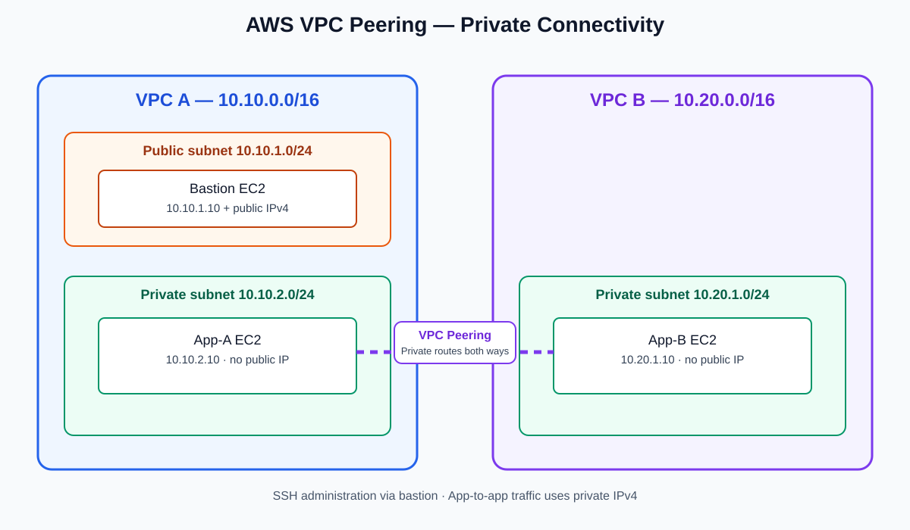

Project overview
This project plan demonstrates private IPv4 communication between workloads in two non-overlapping VPCs. A bastion host provides administrative SSH access while the application instances remain private.
Amazon VPCVPC PeeringEC2RoutingSecurity GroupsArchitecture

Network design
10.10.0.0/16
Public bastion: 10.10.1.10
Private App-A: 10.10.2.10
10.20.0.0/16
Private App-B: 10.20.1.10
No Internet Gateway
Bidirectional routes are required. Peering does not automatically create routes or provide internet access to VPC B.
Validation checklist
- Baseline ping fails before peering routes.
- Forward and reverse private-IP ping tests succeed after configuration.
- SSH to App-B works through the bastion.
- App-A and App-B have no public IPv4 addresses.
- A controlled ICMP rule removal causes failure; restoring it recovers connectivity.
Evidence status: This is a project documentation site. Replace this note with your verified test summary after deploying the resources in your AWS account.
Repository and report
Upload this project folder to your GitHub repository. Include your final PDF report and screenshots of your own AWS console and terminal tests.
Report: AWS_VPC_Peering_Project_Report.pdf (included in the repository package).
Security and cost
Restrict SSH to your own public IPv4 /32 and private-host SSH to the bastion. Never publish private keys. AWS EC2, EBS, and public IPv4 usage may incur charges. Check current pricing and delete lab resources after collecting evidence.